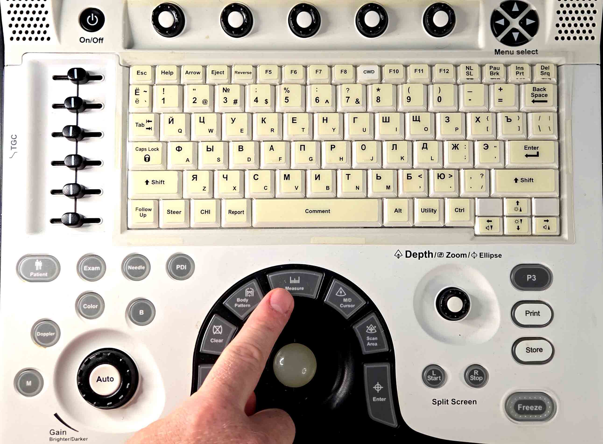
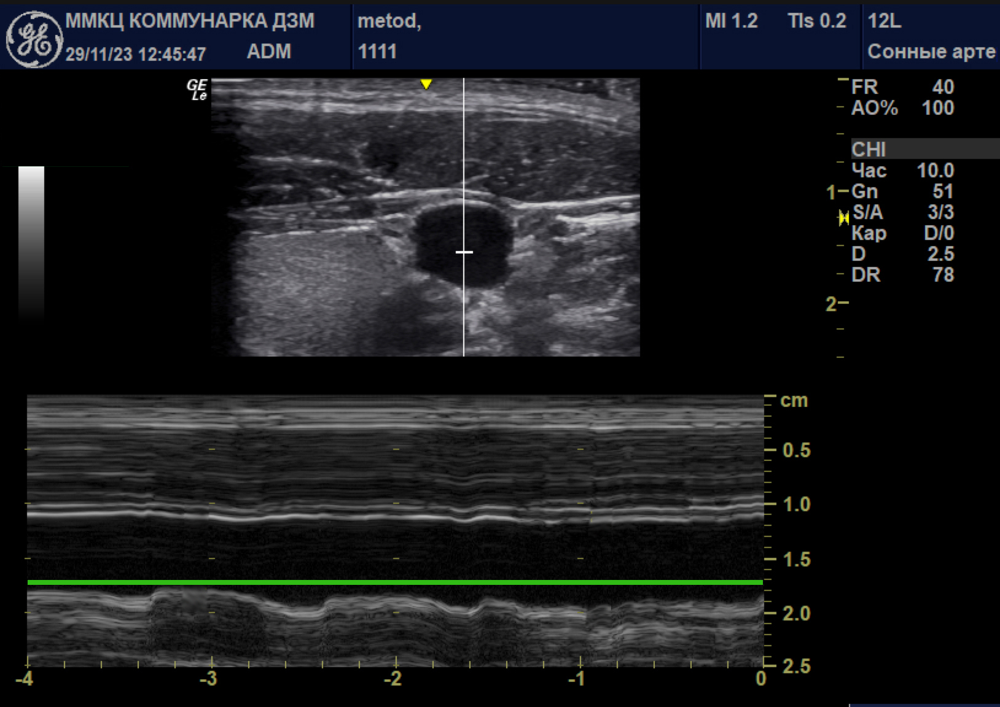

Пошаговый алгоритм
Шаг 1
Уложите пациента строго горизонтально. Старайтесь оставлять нейтральное положение головы пациента. При необходимости поверните его голову в противоположную исследованию сторону, но не более чем на 30 градусов. Возьмите датчик и нанесите достаточное количество геля для создания толстой прослойки. Принципиально сначала поставить основание ладони или свободные пальцы на ключицу пациента, а лишь потом опускать датчик на кожу без давления.
Шаг 2
Получите поперечное изображение сосудов, установив датчик на переднелатеральную поверхность шеи перпендикулярно коже.
Шаг 3
При трудностях выведения используйте прием скольжения датчика с передней поверхности шеи к латеральной.
Шаг 4
Критериями верного выведения сосудов станут: округлое сечение сонной артерии и выбухающая в сторону датчика верхняя стенка внутренней яремной вены. Нажмите кнопку перехода в М-режим.
Шаг 5
Выставьте метку в центр вены и получите изображение с четкими границами между стенкой вены и ее просветом.
Шаг 6
Пятый регулятор под элементом меню "Скорость развертки" прокрутите на 0 и запишите несколько дыхательных циклов.
Шаг 7
Нажмите кнопку "Measure" для начала измерения.
Шаг 8
Подведите пунктирную линию трекболом к нижней стенке вены для визуализации корытообразных колебаний стенки вены и определите границы дыхательного цикла.
Шаг 9
Измерьте минимальный и максимальный размер просвета вены в процессе одного и того же дыхательного цикла, вставьте значения в калькулятор.
Калькулятор для практики
Результат
...